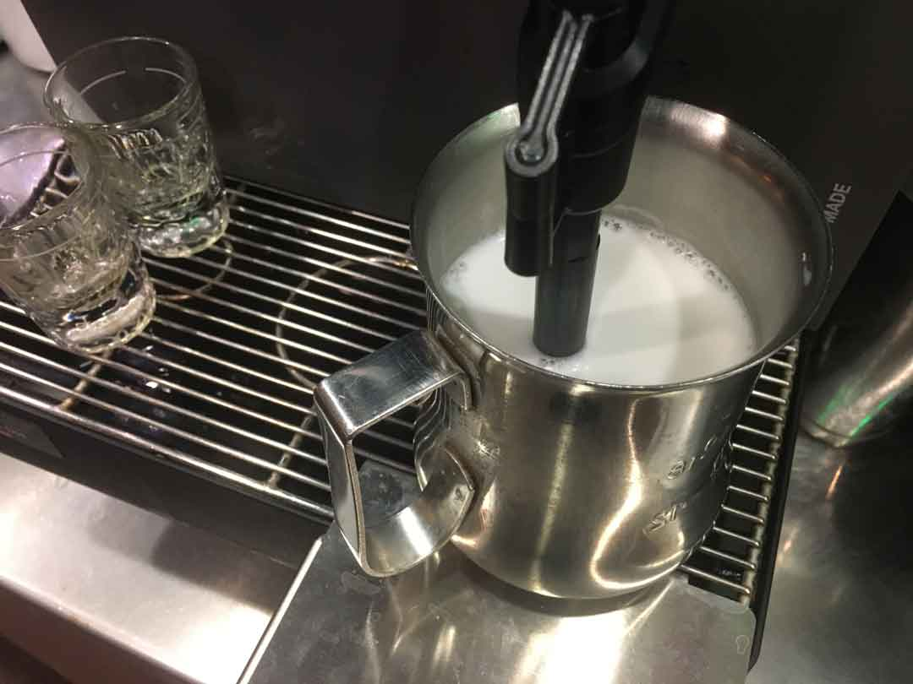
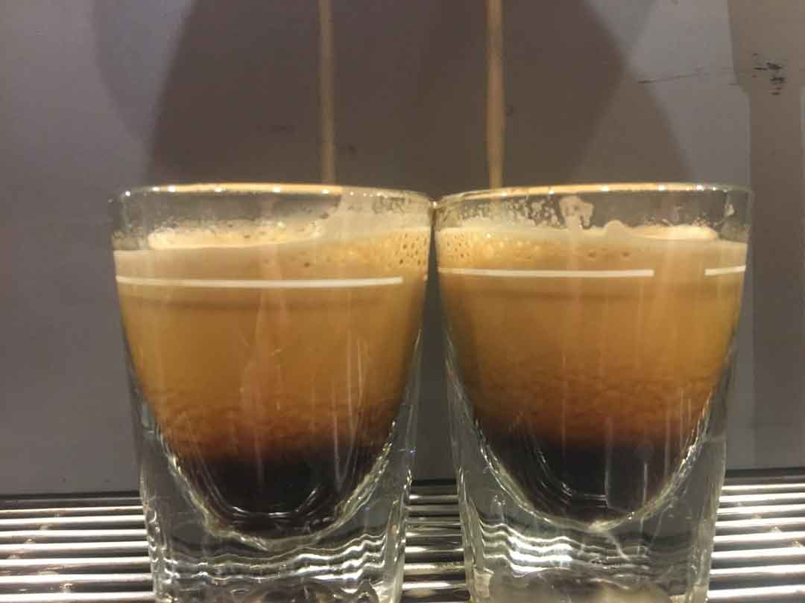
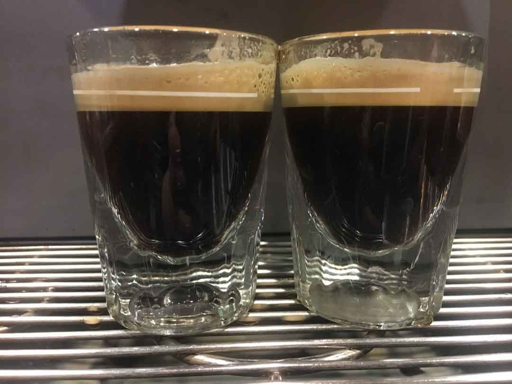
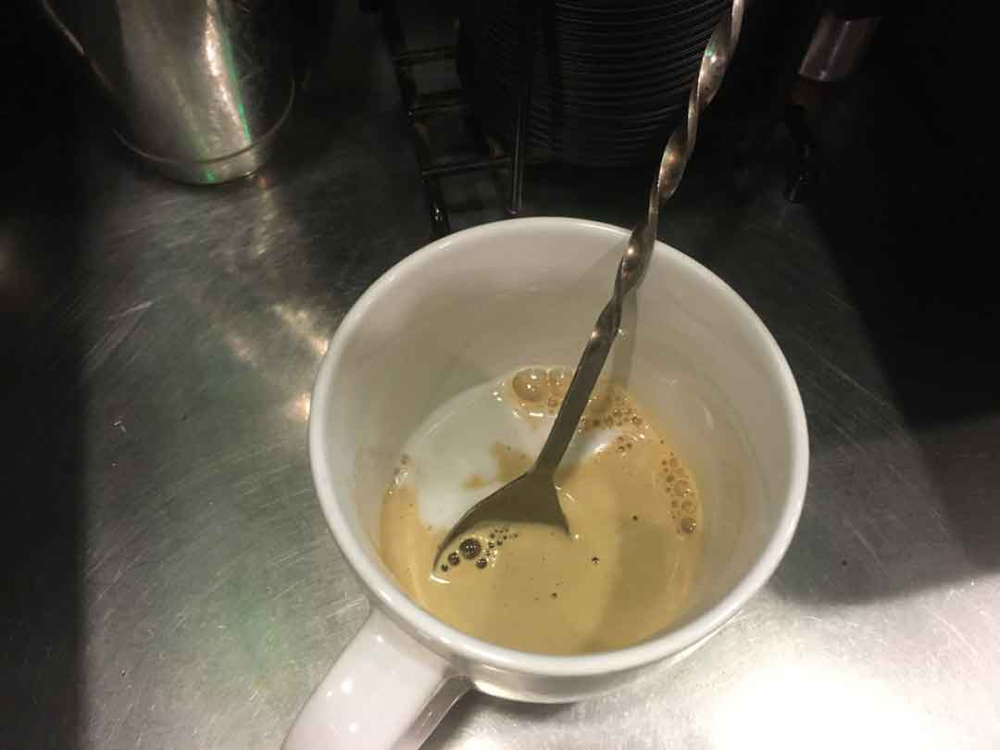
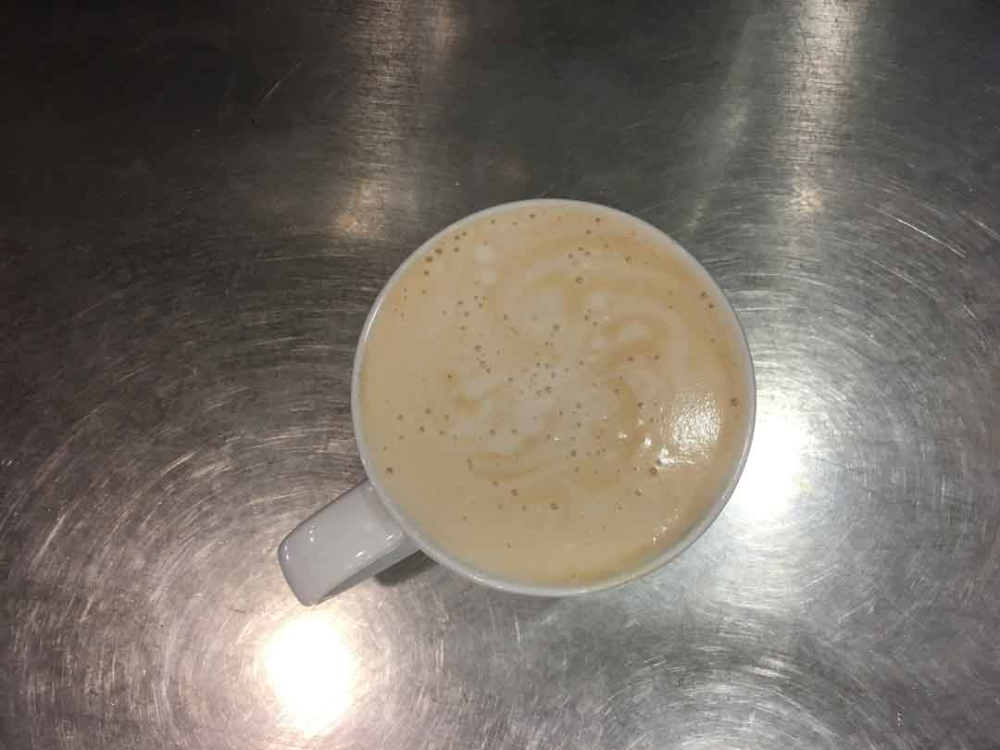

Coffee has become America's stimulant. With so many of us using caffeine to get through our everyday lives, it might be a good idea to learn how your daily latte is made.
A latte is two ingredients; milk (or some variation of it) and espresso. To make a hot one, begin by pouring your milk of choice into a pitcher and steaming it with a steam wand. After the milk has been steamed, take a spoonful of the foam off of the top and put it into your cup. This is to preserve the flavor of the espresso shot with the protiens found in milk foam.
Side trip! Espresso is the essential ingredient in a good latte, but how can you tell it is any good? The two main characteristics of a good espresso shot are caramel color and a semi-sweet aroma. It is really easy for a good shot to turn into a bad one. If the espresso sits for too long before it is conbimed with the steamed milk, the shot will go bad.
| Good Shot | Dead Shot |
|---|---|
|  |  |
The bad shot has turned a blackish color where as the good shot is still caramel colored. If a shot sits too long, it will turn bad.
For the next step, pull your shots of espresso. Make sure to pour them into your cup before their color turns black. The sooner the better.
Stir the espresso shots and milk foam. Pour in the rest of the steamed milk and the latte is finished.
Interested in coffee? This video is a great place to start.